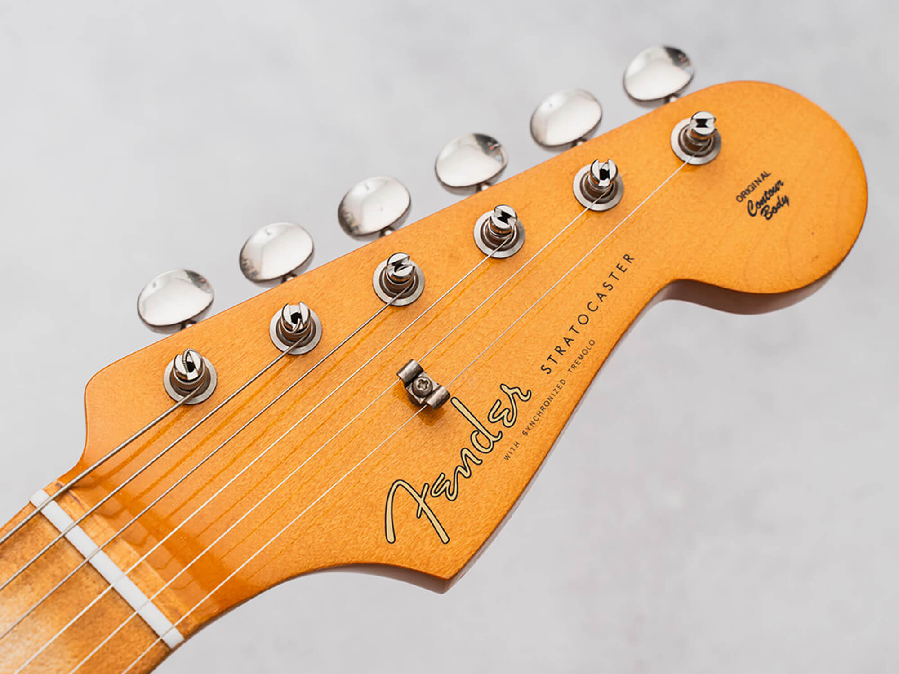
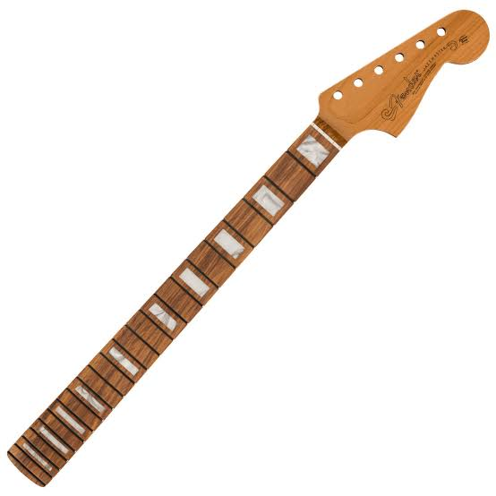
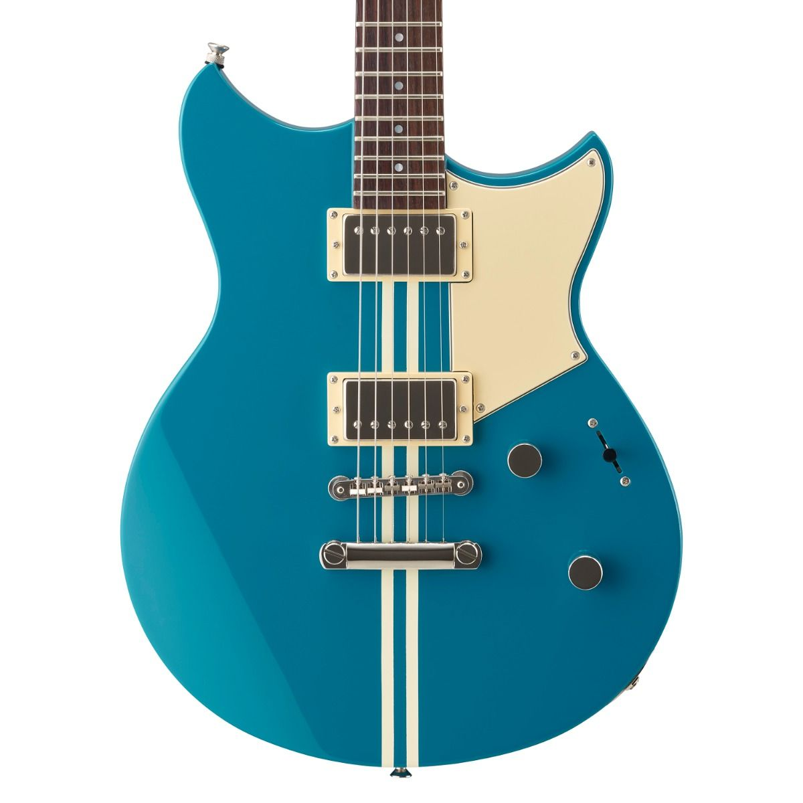
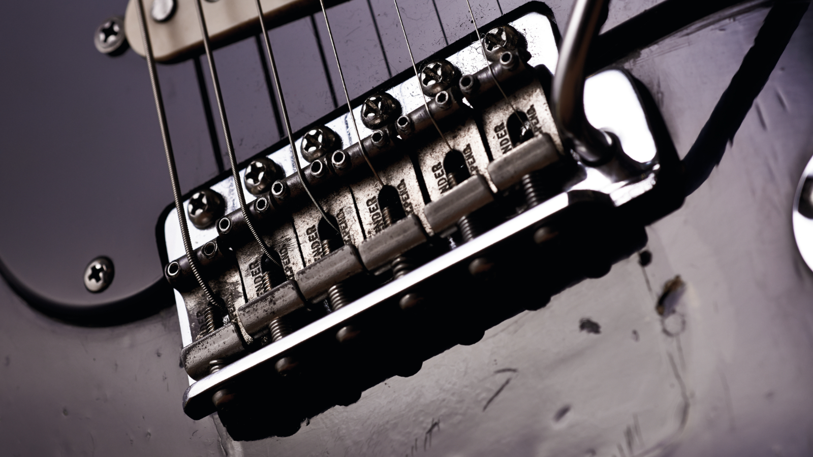

01The Headstock
A guitar headstock is the upper section of a guitar neck that houses the tuning machines (tuners). It controls string tension and pitch.
Explore the partGET TO KNOW YOUR INSTRUMENT
Discover the essential components of an electric guitar and learn how each part shapes its sound and performance.
FOUR ESSENTIAL COMPONENTS

01A guitar headstock is the upper section of a guitar neck that houses the tuning machines (tuners). It controls string tension and pitch.
Explore the part
02A guitar neck is the long wooden part of a guitar that holds the fretboard, frets, nut, and headstock, connecting directly to the guitar body.
Explore the part
03The guitar body is the main central portion of the instrument that anchors the bridge, supports the neck, and either acoustically amplifies string vibrations or houses electronic pickups.
Explore the part
04A guitar bridge supports the strings under tension and transmits their vibrations to the instrument's body or soundboard to produce audible sound.
Explore the part